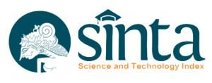

Call For Paper dalam Seminar Nasional Pengaplikasian Telematika (SINAPTIKA) merupakan salah satu rangkaian dari event tahunan yang diselenggarakan oleh Fakultas Ilmu Komputer Universitas Mercu Buana, Jakarta. Kegiatan ini merupakan forum nasional yang menjadi wadah bagi para periset dalam bidang Informatika dan Sistem Informasi.
Topik yang akan disampaikan oleh para pemakalah dalam kegiatan seminar ini meliputi topik topik berikut dibawah ini, akan tetapi tetap terbuka untuk topik topik dibidang ilmu komputer dan sistem informasi lainnya.
TOPIK KAJIAN
• Artificial Intelligence & Machine Learning Applications in Medical
• Tracking and mapping of disease
• Digital healthcare solutions during pandemic
• Cybersecurity Challenges of Electronic Health Records in Medical
• Roles, challenges, and applications of Internet of Medical Things
• e-Health
• Big Data for Healthcare
• Medical image processing
• Biomedical Intelligence, Image Processing and Medical Imaging & Clinical Data Analysis
• Bio-informatics, Health Informatics, and Bio-Computing
• E-learning: challenges, transformation, and IT Solutions
• E-Skills and Information Literacy for Learning
• Socio-technical challenges in the implementation of smart city initiatives
• Profession Challenges (Human Resources)
• Challenges for Human Language Technology
• Smart Technology in Tourism
• Data Management and Statistics for Environmental Data
• Environmental Remote Sensing Applications
• GIS for Environmental Assessment
• Information systems for disaster management
• Renewable Energy & Smart Grids
• Radio-frequency identification (RFID) technology
• Wireless Sensor Networks and Applications
• Mobil Communications
• Localization and Navigation Systems
• Civil and Architecture Engineering
• Big Data Analytics in Manufacturing
• Smart manufacturing/ smart factory
• Intelligent agents and applications
• Perception and sensors for navigation, hazard detection, and victim identification
• Blockchain and Applications
• Cryptocurrencies and regulation
• Financial Innovation, Entrepreneurship and Technology Startup
• Crowdfunding and p2p lending
• Digital and Mobile Banking
• Mobile Wallets
• Technology and Insurance
• Artificial Intelligence and Machine Learning in Finance
• Cybersecurity and Consumer Data Protection
• Digital Supply Chain Management
E-Sertifikat Pemakalah / Seminar
Tanggal-tanggal Penting
Gelombang 1
- 30 September 2021Batas akhir pengiriman makalah
11 Oktober 202120 Oktober 2021Pengumuman makalah diterima23 Oktober 202127 Oktober 2021Batas Akhir Pengiriman Revisi Makalah- 24 Oktober s/d 31 Oktober 2021Registrasi Pembayaran
Gelombang 2
- 01 Oktober s/d 24 Oktober 2021 Batas akhir pengiriman makalah
- 02 Novemberber 2021Pengumuman makalah diterima
- 05 November 2021Batas Akhir Pengiriman Revisi Makalah
- 02 November s/d 05 November 2021 Registrasi Pembayaran
Gelombang 3
- 07 November 2021 Batas akhir pengiriman makalah
- 09 November 2021 Pengumuman makalah diterima
- 10 November 2021 Batas Akhir Pengiriman Revisi Makalah
- 09 November s/d 12 November 2021 Registrasi Pembayaran
üìçCALL FOR PAPERüìç
Hasil Penelitian dan Pengabdian Masyarakat Dalam Pengaplikasian Telematika
Artikel yang diterima akan diterbitkan pada e-Prosiding SINAPTIKA (ISSN 2086-8251) dan Artikel yang terpilih akan diterbitkan pada Jurnal Terakreditasi Nasional (SINTA) 
Investment Fee CALL FOR Paper Penelitian dan Pengabdian Masyarakat
Pemakalah Dosen/Umum : Rp. 150.016 Rupiah
Pemakalah Mahasiswa : Rp. 75.016 Rupiah
Audience Seminar : Rp. 10.016 Rupiah
Pembayaran Melalui Bank Berikut :
Transfer Ke REKENING BNI : 0018295937 a.n Yayasan Menara Bhakti
Template Penulisan CALL FOR Paper SINAPTIKA 2021
Template Penulisan Pengabdian Masyarakat 2021
Template Paper Pengabdian Masyarakat 2021
Submit Your Paper to SINAPTIKA 2021
*Upload your paper. The paper must be in PDF format (file extension .pdf)
Submit Your Paper in Easychair
PENDAFTARAN SEMINAR SINAPTIKA 2021
Setelah paper Accepted mohon kirim bukti bayar
KONTAK KAMI
Gedung C Lantai 2
Fakultas Ilmu Komputer Universitas Mercu Buana
Jl Meruya Selatan No, 1, Jakarta Barat, Kota Jakarta Barat, Daerah Khusus
Ibukota Jakarta 11650
Phone : 021 5840 816 (Hunting), ext: 5700
Erphan HP +62 812-8388-8483 (WA Only)
Doni +62 813-1781-1990 (WA Only)
Anis Cherid HP 0816-1342-820 (WA Only)
Call For Paper dan Jurnal Pengabdian Masyarakat
Riri Fajriah HP +62 817-4988-609 (WA Only)
www.sinaptika.mercubuana.ac.id
Email : [email protected]